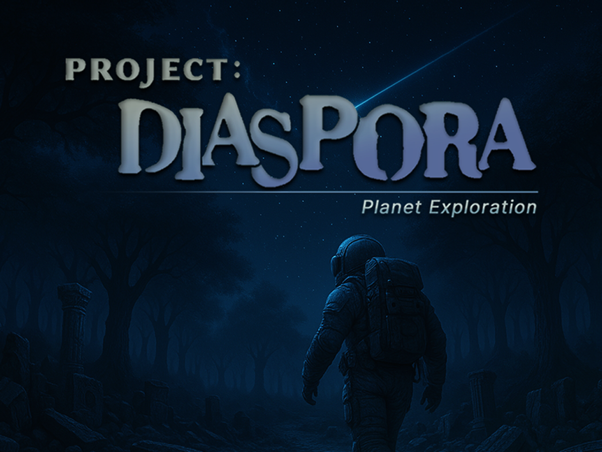
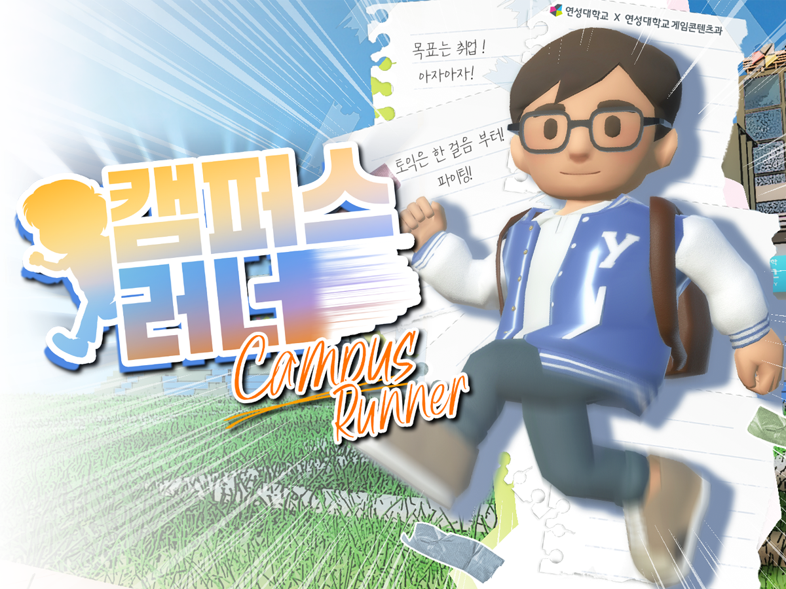
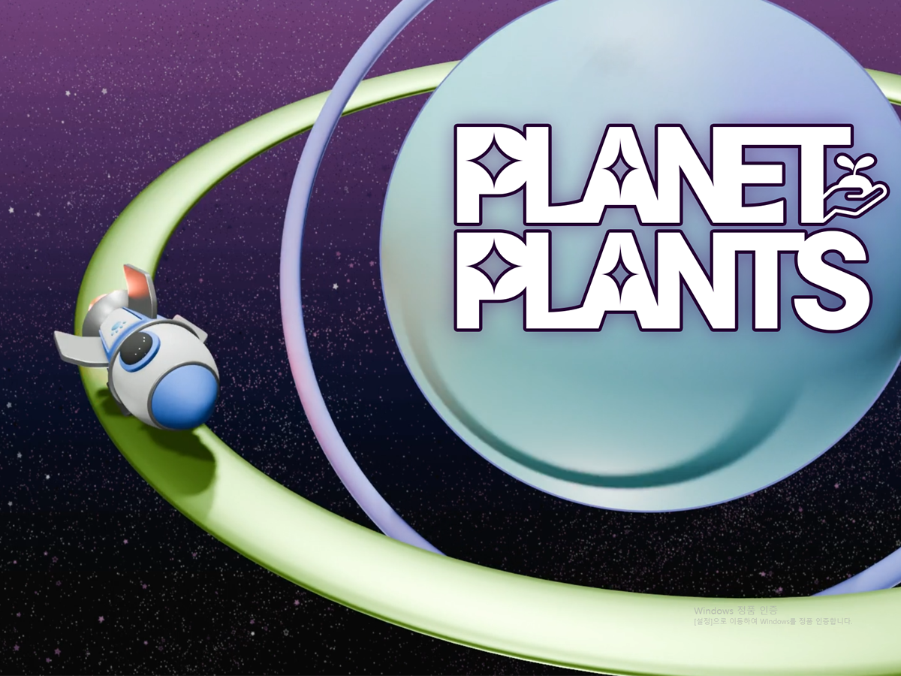
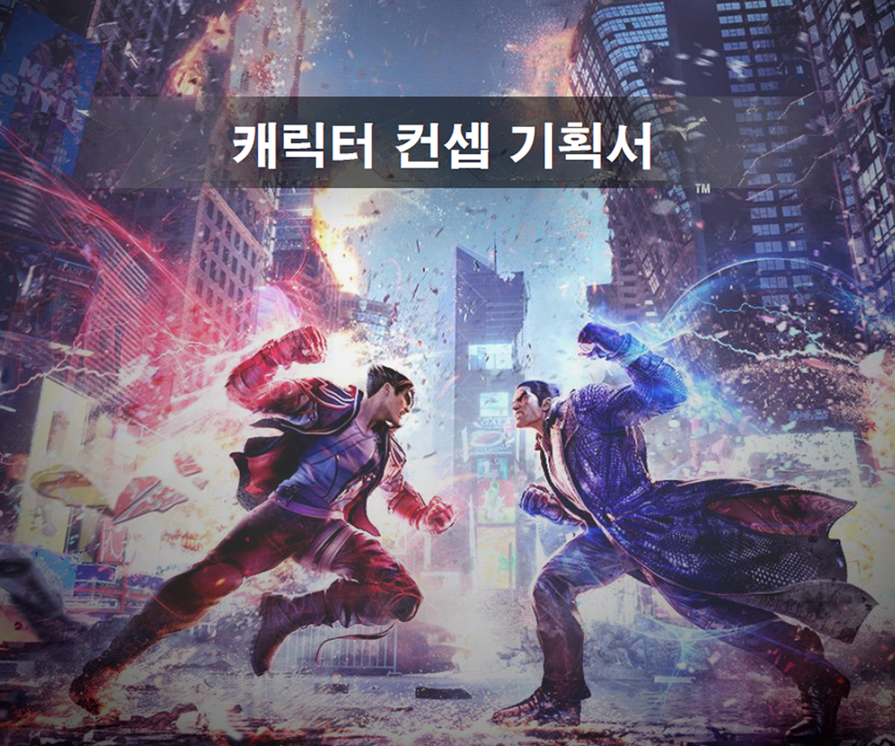
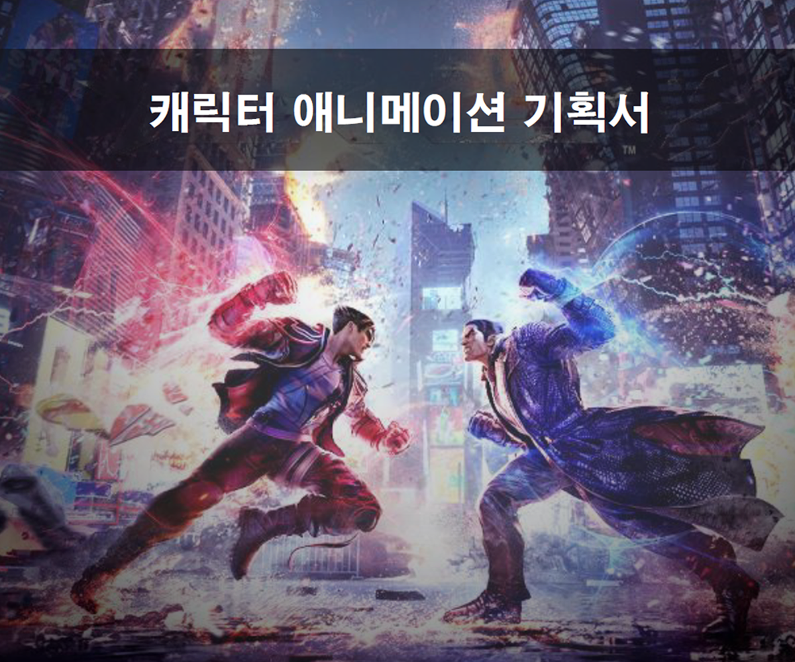
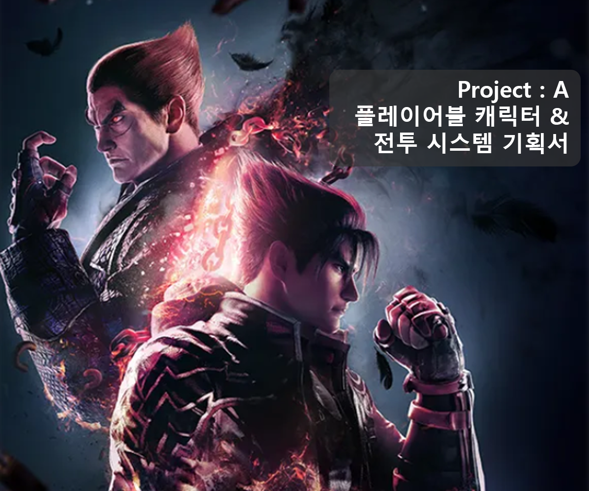
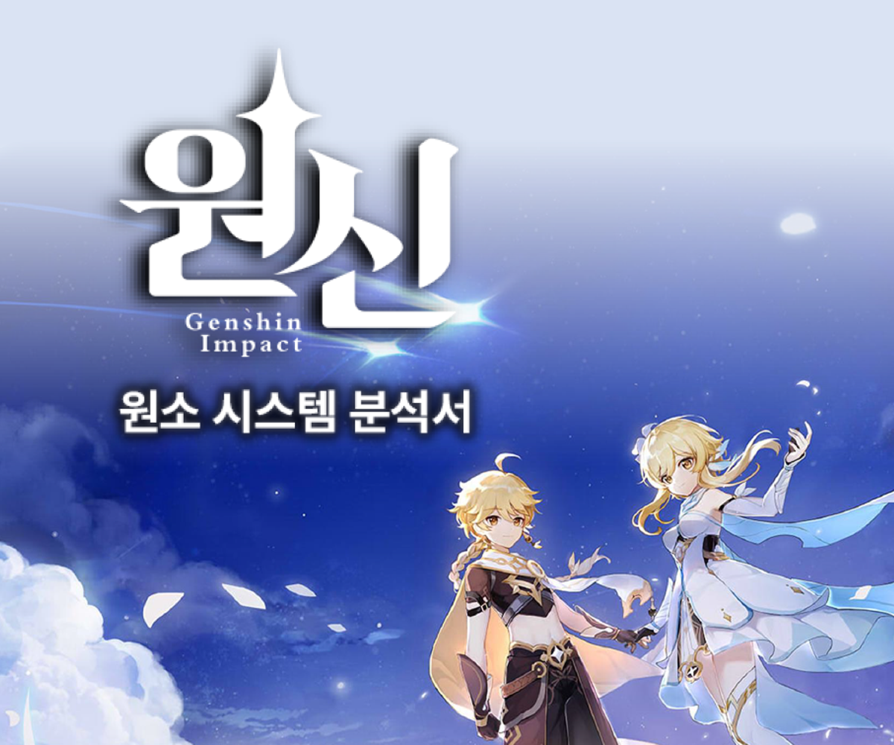

팀 프로젝트

Project : Diaspora

캠퍼스 러너

Planet Plants
개인 포트폴리오

Project : A
창작 캐릭터 컨셉 기획서
창작 캐릭터 컨셉 기획서

Project : A
창작 캐릭터 애니메이션 기획서
창작 캐릭터 애니메이션 기획서

Project : A
창작 시스템 기획서
창작 시스템 기획서

Distres & Deceive
창작 게임 초안 기획서
창작 게임 초안 기획서

원신 : 원소 시스템 분석서